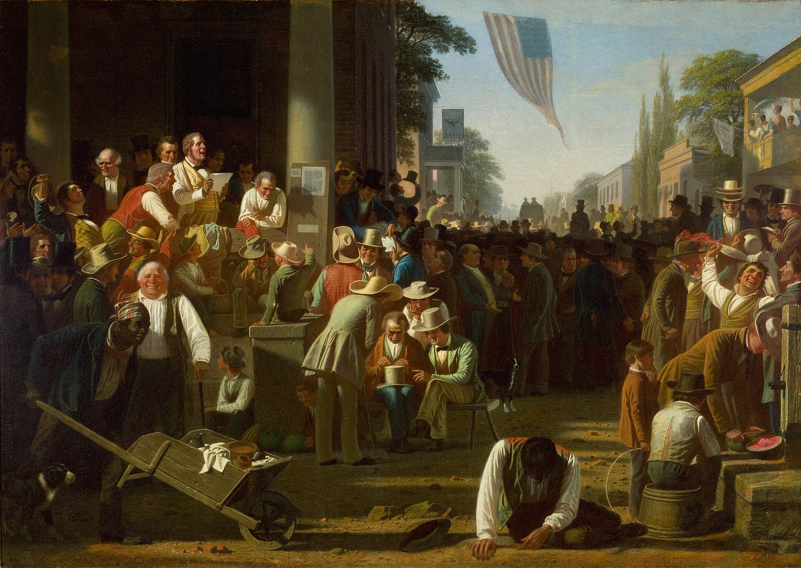

Final Examination Preparation and Capstone Workshop
Module Theme
Course Synthesis and Final Examination
Lesson 17.02
Final Examination Preparation and Capstone Workshop
Lesson
📖 FOCUS
Two tasks remain: the Final Examination, and the paper that shows the course can be used.
The Final Examination opens with this lesson. Every question on it was already answered once in a weekly quiz. This lesson covers the pairs of concepts students most often blur together, and a critical read of the Capstone draft of the kind given to a thinker's argument all term.
WHAT THE FINAL EXAMINATION ACTUALLY IS
Three questions from each week's bank, Weeks 1 to 16. Nothing is written new.
1234567891011121314151617
48 questions total: 3 drawn at random from each of Weeks 1 through 16, 2 points each, 96 points. Week 17 contributes none. Opens with this lesson; due end of Week 17.
🎯 BY THE END OF THIS LESSON YOU WILL BE ABLE TO…
1
I will be able to correctly sort a case into one of two frequently confused concepts (anomie and alienation, or the three types of legitimate authority) and state the distinguishing feature, not just the label.
2
I will be able to check my Capstone draft against its own rubric and identify at least one section that currently summarizes a thinker rather than applying one.
📚 PART 1 · THE FINAL EXAMINATION
The exam is a single, auto-graded Canvas quiz, one attempt, drawn from the weekly question banks for Weeks 1 through 16. It is cumulative and weighted evenly across those 16 weeks, not toward the most recent reading. There is no essay section. It tests what the weekly quizzes tested: whether you can identify a thinker's central claim, name the concept a description is illustrating, and tell two similar-sounding ideas apart.
Preparation is most efficient on the handful of concept pairs confused repeatedly across the term. A pooled, cumulative bank is most likely to test those more than once.
📖 STUDY GUIDE FOR THE FINAL
For each thinker below: know the central claim, the key concepts attached to their name, the historical context they were writing in, and at least one critique or limitation of their framework. For each concept: know its definition, its theoretical source, and one example.
Thinkers
Aristotle, Comte, Tocqueville (individualism; the Conclusion to Volume I), Durkheim (including moral education), Weber, Marx, Simmel, Tönnies, Putnam, Nisbet, Bellah, Hunter
Concepts
social fact, collective conscience, mechanical solidarity, organic solidarity, anomie, alienation, rationalization, iron cage, disenchantment, division of labor, bureaucracy, legitimate authority (traditional, charismatic, rational-legal), Gemeinschaft, Gesellschaft, social capital (bonding and bridging), tyranny of the majority, mores, intermediary institutions, sociological imagination, personal trouble vs. public issue
📚 PART 2 · THE PAIRS STUDENTS BLUR
Name the specific feature that rules out the wrong answer, not only the label.
⚡ TRY IT · NAME THE CONCEPT
For each case, choose the concept it actually illustrates. More than one option will sound plausible; only one fits the definition precisely.
1. A factory worker no longer recognizes anything of himself in the product he assembles for a wage he had no part in setting.
2. A trader's sense of what would satisfy him keeps rising faster than his actual winnings, even during the best year of his career.
3. A newly elected official's authority rests entirely on having won under agreed rules, not on family line or personal magnetism.
4. A cluster of extended families who have lived on the same three streets for four generations, bound by long acquaintance rather than contract.
5. A civic club that strengthens ties among people who are already demographically similar to each other, without connecting to any other group in the city.
📚 PART 3 · THE CAPSTONE WORKSHOP
The Community Flourishing Capstone asks you to do, on a real community of your choosing, exactly what this course has been training you to do: describe an institution, apply a classical framework to it honestly (strengths and weaknesses both), and recommend something grounded in theory rather than in personal preference. It requires at least three institutions, at least four frameworks from the course, and at least three primary sources printed on Primary Source Guide pages, in 1,200 to 1,800 words.
Three failure modes.
Summary standing in for application
"Durkheim believed societies are held together by solidarity" is a fact about Durkheim. It is not analysis of your community. Every paragraph that names a thinker should end by doing something to your specific institution that only that thinker's framework makes possible.
Recommendations grounded in opinion, not theory
"The community should communicate better" could follow from nothing you read this term. A recommendation earns its place only if you can name which thinker's diagnosis it is responding to and why that diagnosis, not just your preference, points there.
One strength, no weakness, or the reverse
The brief asks you to assess both the strengths and weaknesses of each institution. An evaluation that only praises or only criticizes has not actually evaluated anything; it has advocated.

The Verdict of the People: a Missouri town gathers at its courthouse to hear election returns, the street, shops, and balconies full of neighbors. Government, commerce, and civic life appear in one view, as the Capstone examines several institutions of one community together. George Caleb Bingham, 1854–1855. Public domain, via Wikimedia Commons.▶ Where would Durkheim and Marx agree, and where would they disagree, about why modern work can feel hollow?
They agree that modern economic life produces a real, structural discontent, not merely individual complaint. They disagree sharply about its source and its remedy. For Marx the problem is ownership: the worker is alienated because someone else owns what he makes and the surplus of his labor. The remedy is a change in who owns the means of production. For Durkheim the problem is regulation, not ownership: modern work can lack the moral norms that would tell a person what to expect and what counts as enough. The remedy is stronger intermediary institutions, particularly occupational associations, not a change in ownership at all. A capstone paragraph that notices this disagreement, rather than treating "alienation" and "anomie" as interchangeable words for "workers are unhappy," is doing the comparative work the study guide above calls for, and the kind of application the Capstone rubric rewards.
➡️ NEXT
1
Final Review 17B
2
Final Examination
💪 SUMMARY
The Final Examination is a cumulative check on material already tested, weighted evenly across the term. A Capstone that uses Durkheim differs from one that mentions him. Both turn on one skill: telling two similar-looking things apart by naming precisely what makes them different.